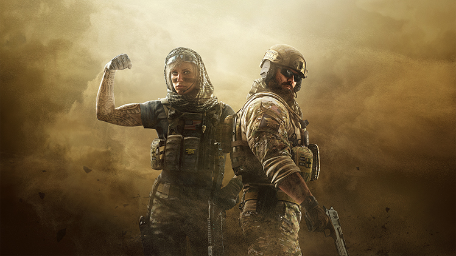
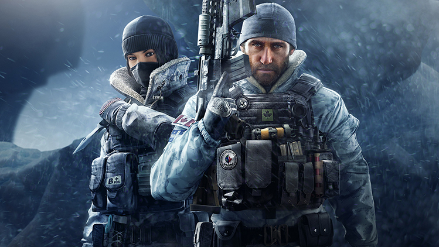

Seizoen 3: Nieuwe oparators.
28-07-2016 10:00
In Operatie Skull Rain krijgt het Rainbow-team hulp van twee BOPE-operators om
vrede te brengen in de Favela, onze nieuwe gratis map.Met deze derde grote
contentupdate willen we de game-ervaring verbeteren met de maatregelen tegen
ongewenste gedrag, een nieuwe wapenuitbreiding, verschillende verbeteringen, nieuwe
aanpassingsmogelijkheden en nog veel meer.
In operatie Skull Rain rekruteert het Rainbow-team twee nieuwe operators van BOPE: Caveira en
Capitao.
De nieuwe operators worden direcht ontgrendeld voor de season pass-eigenaren, die zeven
dagen lang duurt exclusief toegang krijgen.na de exclusieve periode kunnen alle spelers de
operators ontgrendelen met roem of R6-credits.

Oparatie
Dustline
11/05/2016
In de oparatie stoflaag sluiten twee navy SEAL-oparators zich aan bij Rainbow-team om de grens veilig te stellen in de Grens, onze nieuwe gratis map.Deze tweede grote contentupdate bevat ook twee nieuwe wapenskins, geavanceerde aanpassingsopties, de mogelijkhei om je uitrusting tussen rondes in te vervangen en nog meer verbeteringen.

Oparatie
BLACK ICE
Zet de Siege voort met onze eerst grote contentupdate, Operatie Zwart IJs, waarin
je onder andere toegang krijgt tot de nieuwe map jacht, twee nieuwe JTF2-operators,
nieuwe wapenskins en een toeschouwerscamera op alle systemen.
JTF2-oparators worden getraind om te werken onder extreme omstandigheden, waarbij
een grote afhankelijkheid van elektronische apparaten je ondergang kan betekenen.
Operators zijn direct en exclusief voor houders van een Season pass zeven dagen
beschikbaar voor ze ok aan andere speler tegen betaling van roem of r6-credits
beschikbaar worden gesteld.